KHARAKTERNYKY · INITIATION · PORTALS
Alisia
A young Ukrainian kharakternyk. She learns to open portals, trains with the Molfar, survives a severe injury and later helps train new kharakternyky.
Read more →PEOPLE FROM DIFFERENT WORLDS AND ERAS
Their stories begin in different worlds and different eras, but gradually become part of one larger story.
KHARAKTERNYKY · INITIATION · PORTALS
A young Ukrainian kharakternyk. She learns to open portals, trains with the Molfar, survives a severe injury and later helps train new kharakternyky.
Read more →
FIRST PLAN · CIVILIAN EVACUATION
A city resident who reaches a newly built protected shelter during a massive attack.
Read more →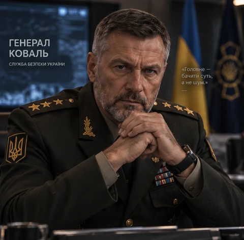
FIRST PLAN · SECURITY SERVICE OF UKRAINE
General and Deputy Head of the Security Service of Ukraine. A restrained, experienced leader with a strategic mindset.
Read more →
UNDERGROUND CITIES · MEDICINE
A student who discovers an aptitude for medicine. He intuitively identifies patient problems and learns to operate medical recovery capsules.
Read more →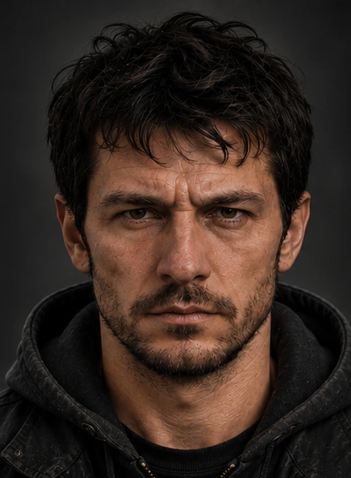
FIRST PLAN · INITIATIONS IN OCCUPIED TERRITORIES
A kharakternyk who opens portals, supports newly initiated people and coordinates the community in occupied territories.
Read more →
HORUNZHY OTAMAN · INDUSTRY AND EVACUATION
A kharakternyk who coordinates scientific and industrial projects and opens portals to evacuate people.
Read more →
ZERO PLAN · ARMED FORCES OF UKRAINE
A military analyst leading the development of an intelligence network for observation and data analysis.
Read more →UNDERGROUND CITIES · MENTAL ABILITIES
Artem and Vlad's friend. Curious and sociable; after being rescued from a laboratory, he gradually discovers a new life and learns to decide for himself how to use his exceptional mental abilities.
Read more →
CHARACTERS · FINLAND
A Finnish student of Molfar. Quiet and reserved, he develops his thought-link ability and learns to open portals independently.
Read more →
MEXICO · SIERRA HOUSE · KHARAKTERNYKY
A trusted aide to the Patron of the Sierra House. He fought on the Ukrainian side, was initiated in Ukraine and gained the ability to open short portals.
Read more →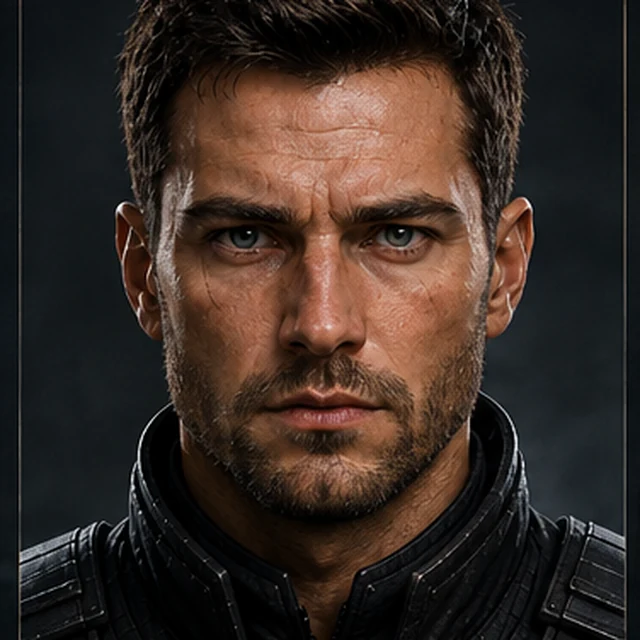
ZERO PLAN · RECONNAISSANCE · COMMAND
Captain and commander of a kharakternyk reconnaissance team exploring unknown plans and technologies.
Read more →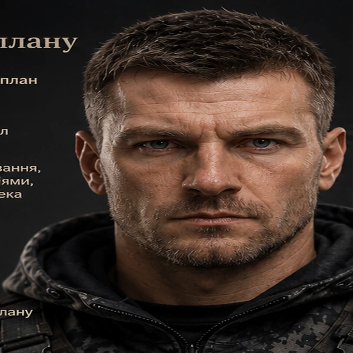
SECOND PLAN · MILITARY COMMAND
A Second Plan general coordinating aviation, defence and civilian evacuation.
Read more →
TURKEY · MILITARY STORYLINE
A Turkish general, longtime friend of Ukrainian General Oleksii and representative of the Order.
Read more →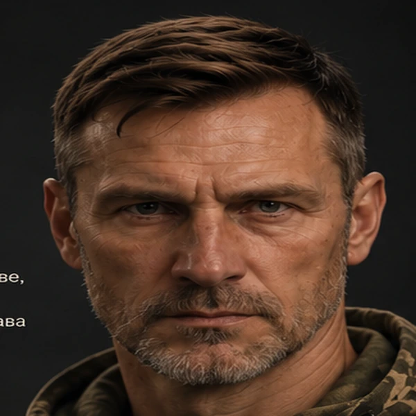
FIRST PLAN · ARMED FORCES OF UKRAINE
A combat general, principled commander and coordinator of Ukraine’s defence.
Read more →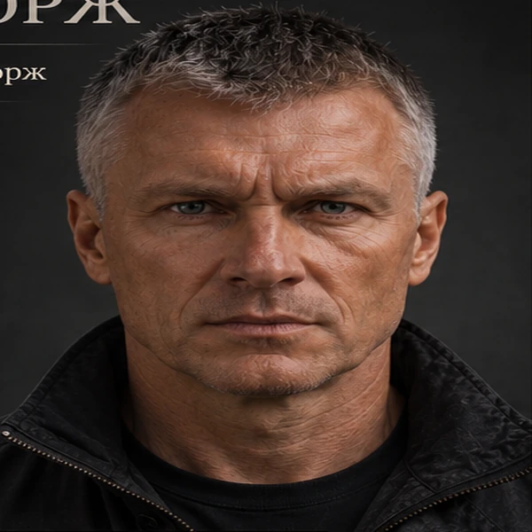
ZERO PLAN · COUNTERINTELLIGENCE
An experienced characterник who leads counterintelligence operations and works against the Order.
Read more →
FIRST PLAN · PROPHECY
Grandpa Mykola's wife, a woman with the gift of prophecy. Her visions change as events unfold, and her warning of humanity's destruction helps set the main story in motion.
Read more →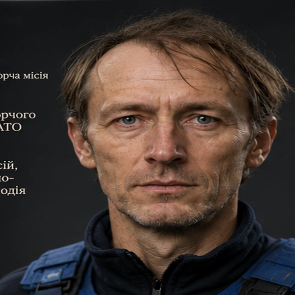
NATO · PEACEKEEPING MISSION
An officer in a NATO peacekeeping contingent, coordinating missions, communications and civil-military cooperation.
Read more →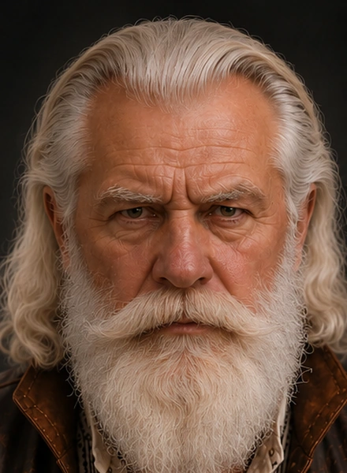
FIRST PLAN · HETMAN · ALLIANCE OF WORLDS
Grandfather Mykola, who becomes the hetman of his world as its kharakternyk community revives and helps lead the alliance of three civilisations.
Read more →
ZERO PLAN · HETMAN · INTER-PLAN COORDINATION
Hetman of the Zero Plan. Coordinates inter-Plan cooperation, defence, production and civilian evacuation.
Read more →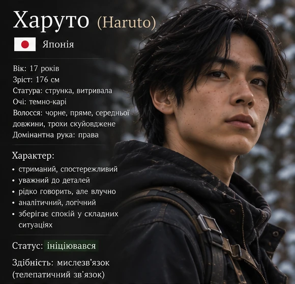
JAPAN · MOLFAR'S STUDENTS · KHARAKTERNYKY
A 17-year-old student of Molfar from Japan. Reserved, analytical and observant; he develops and learns to control his thought-link ability.
Read more →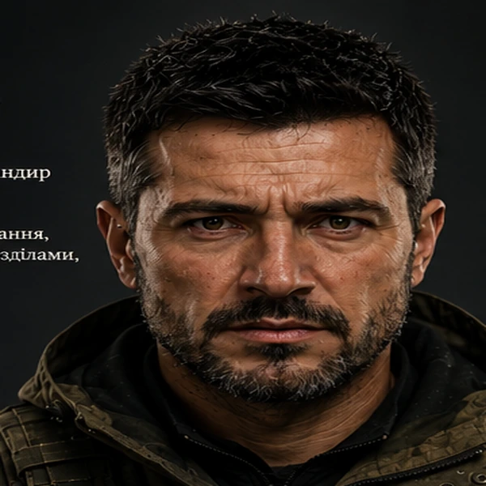
UKRAINE · MILITARY STORYLINE
A Ukrainian military commander specialising in tactical planning and unit command.
Read more →
CHARACTERS · KENYA
A Kenyan student of Molfar. Confident, decisive and passionate, she develops her thought-link ability and learns to open portals.
Read more →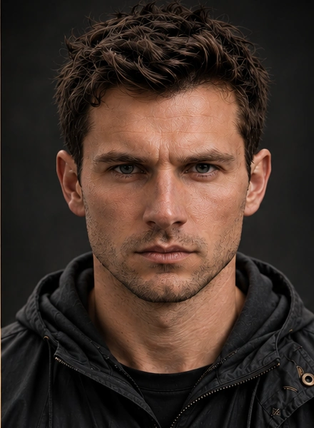
ZERO PLAN · PORTAL OPERATIONS
A kharakternyk specialising in complex portal control and the transfer of large structures between plans.
Read more →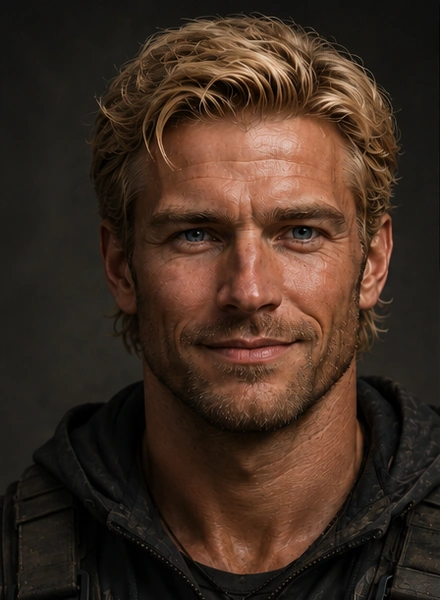
ZERO PLAN · INTER-PLANAR TRAVEL
A kharakternyk who guides transitions between plans, helps inhabitants of distant worlds and explores unknown plans.
Read more →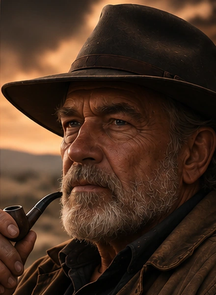
DISTANT PLAN · CIVILIAN EVACUATION
An inhabitant of a distant planet whom Isaac has known for almost two centuries. After the Three-Day Law restrictions are lifted, Joe and the other inhabitants can relocate to the resort planet.
Read more →
ZERO PLAN · MEDICAL TRAINING
A young inhabitant of the Zero Plan underground city. Observant and practical, he quickly befriends Artem, Denys and Vlad; he and Artem show an intuitive aptitude for working with medical capsules.
Read more →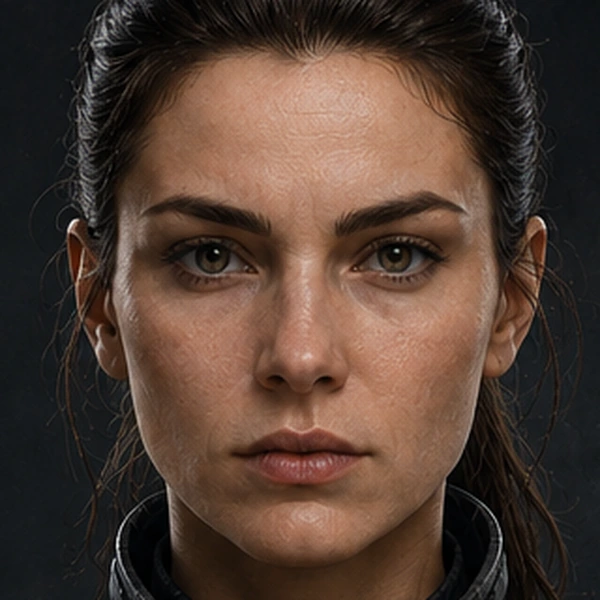
ZERO PLAN · RECONNAISSANCE · NEUROENGINEERING
Neuroengineer, callsign Sigma. A member of Evihid's team, she studies scan data, neural interfaces and the bio-organic systems of alien vessels.
Read more →
ZERO PLAN · SCIENCE AND ENGINEERING
Senior research associate and engineering coordinator. Organises research centres, underground cities and evaluates new robotic systems.
Read more →
MILITARY SERVICE · NEUROENGINEERING
A military neuroengineer specialising in neural interfaces and thought-link systems.
Read more →
ZERO PLAN · MEDICINE
A physician coordinating inter-Plan medical programmes, capsule supplies and medical training. She accepts Marat's proposal of marriage.
Read more →
DARK WORLD · LORD · PORTALS
Ruler of his own lands and Nairin’s old friend. Despite his oath to the Prince, he risks everything to save him.
Read more →
MILITARY COMMAND · ASSAULT ON THE SETTLEMENTS
A commander of armoured groups who adapts the assault to changing battlefield conditions.
Read more →
LORDS' COUNCIL · MILITARY COMMAND
Commander of the Supreme's air forces, directing aerial groups during the assault.
Read more →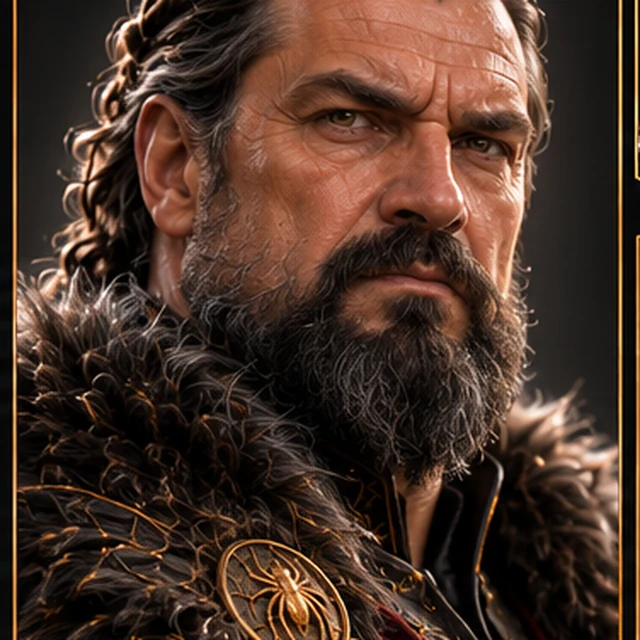
LORDS' COUNCIL · MISSILE FORCES
Commander of the missile forces, directing the sustained assault on the city-path.
Read more →
MEXICO · MOLFAR'S STUDENTS · KHARAKTERNYKY
A student of Molfar from Mexico. Lively, open and curious; she develops the thought-link and learns to control it.
Read more →
SECOND PLAN · MILITARY AVIATION
A combat pilot leading his own flight. After crossing a portal, his fighter loses thrust but remains controllable.
Read more →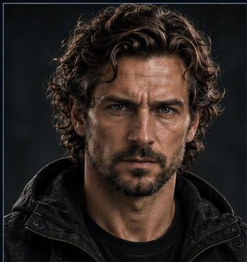
TECHNOLOGY DEVELOPMENT · ROBOTICS · PROTECTION
Engineer and development lead for the R-10 and R-17 autonomous platforms, networked robot control and mobile defensive systems.
Read more →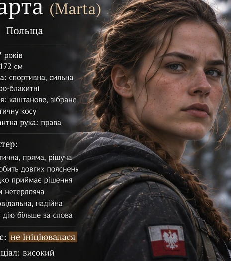
POLAND · MOLFAR'S STUDENTS · KHARAKTERNYKY
A 17-year-old student from Poland. Practical, direct and decisive; she makes quick decisions and values responsibility and actions over words.
Read more →
ZERO PLAN · EVIHID'S TEAM
A professional pilot and ship operator involved in flights, reconnaissance and tests of unfamiliar technologies.
Read more →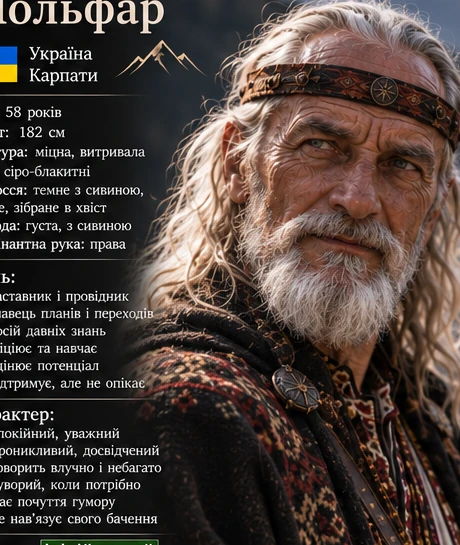
KHARAKTERNYKY · UKRAINE · CARPATHIANS
A Ukrainian kharakternyk from the Carpathians. A mentor and guide who trains young kharakternyky, passes on experience and helps them develop their abilities.
Read more →
GREECE · MOLFAR'S STUDENTS · KHARAKTERNYKY
A 17-year-old student from Greece. Sociable, talkative and witty; he gets along with people easily, though he can sometimes be overly impulsive.
Read more →
ZERO PLAN · SCIENCE · DEFENSIVE TECHNOLOGY
A scientist researching a Ragati module and developing an adaptive protective field with Rita for robotic platforms.
Read more →INFRASTRUCTURE
An electrician working to restore power networks and local infrastructure after attacks.
THE ORDER
A former Corporation member whose knowledge of internal codes, routes and hidden projects helps the investigation.
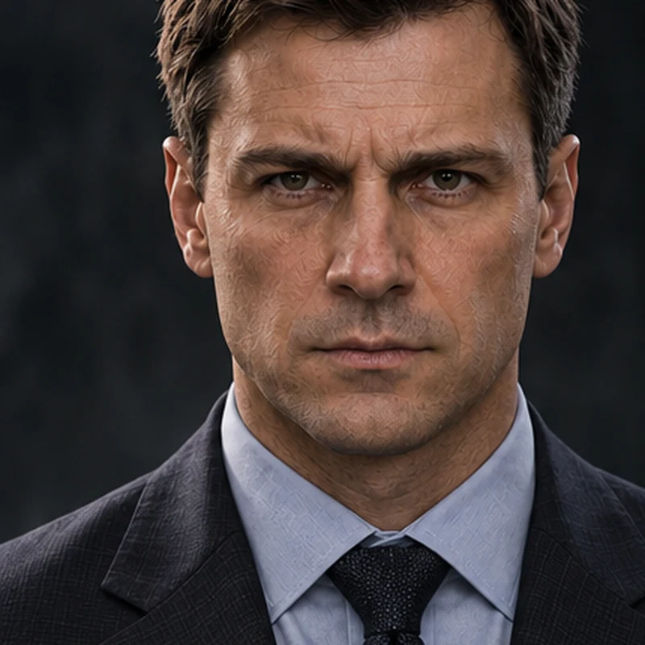
UKRAINE · THE ORDER
The Order’s chief representative in Ukraine, also identified as its chief coordinator.
Read more →
FIRST PLAN · GEOLOGY · ENGINEERING
Geologist and engineer. Coordinates structural emergency analysis and leads a dedicated team building the underground city beneath Donetsk.
Read more →
FIRST PLAN · MILITARY STORYLINE
A Ukrainian soldier serving in defensive and assault teams. He takes part in settlement defence, prisoner-capture operations and battles against combat robots.
Read more →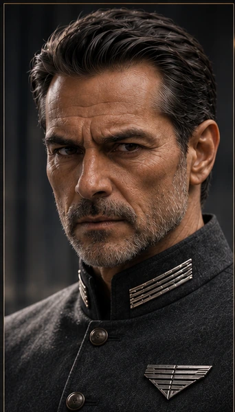
SECOND PLAN · COORDINATION
Chief coordinator of the Second Plan. Leads inter-Plan negotiations, aligns political and defence decisions, and coordinates his world's role in the shared war effort.
Read more →
FIRST PLAN · THE ORDER · SCIENCE
A professor and PhD researcher in spatial-wave fields and portals. After her capture, she works with Noil on the defensive module.
Read more →
THE DARK ONE'S ARMY · MILITARY STORYLINE
A soldier in the Dark One's army: disciplined, cold-minded and tactically experienced; not an armoured-unit commander.
Read more →
LEBANON · MOLFAR'S STUDENTS · KHARAKTERNYKY
A 17-year-old student of Molfar from Lebanon. Calm and observant, he listens more than he speaks and shows an ability to perceive other people's thoughts.
Read more →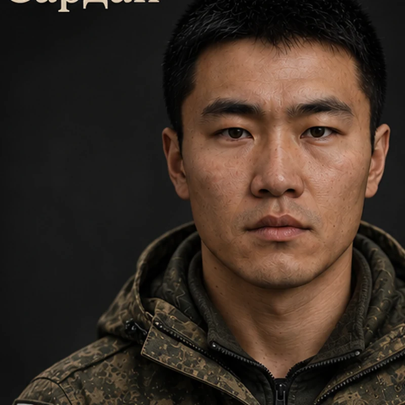
NORTHERN STATE · MILITARY STORYLINE
A serviceman of the Northern State who received a thought-link bracelet and tried to cross the front line with fellow soldiers.
Read more →RESCUE SERVICE
Foreman of the United Humanity rescue team. Leads a rescue unit and takes part in complex evacuation operations.
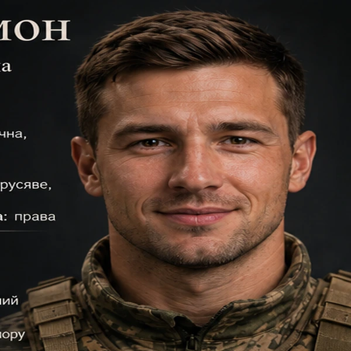
UKRAINE · MILITARY STORYLINE
A Ukrainian serviceman: calm, confident and communicative, with a sense of humour.
Read more →MILITARY OPERATIONS
A company commander on the First Plan who observes troop preparations and movements before an offensive.
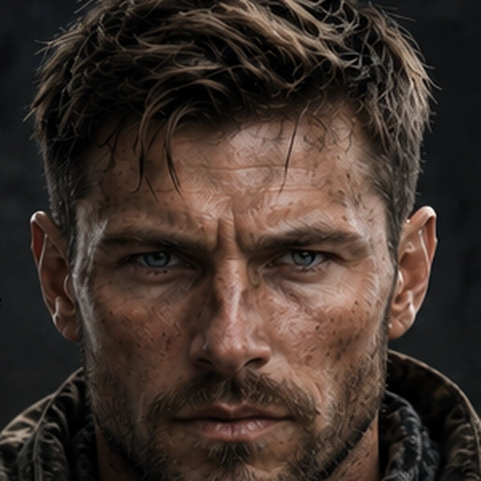
MILITARY STORYLINE · SNIPER
An experienced sniper who discovers the ability to use portals after capture and learns to combine it with his existing skills.
Read more →
FIRST PLAN · INFANTRY
A Ukrainian infantryman who has fought since the beginning of the war. Travels with Phoenix through a portal to an orbital base.
Read more →
UNDERGROUND CITIES · ARTEM, DENYS AND KAIR
Artem and Denys's friend. He explores the underground city with his friends, discovers new possibilities and gets to know Kair.
Read more →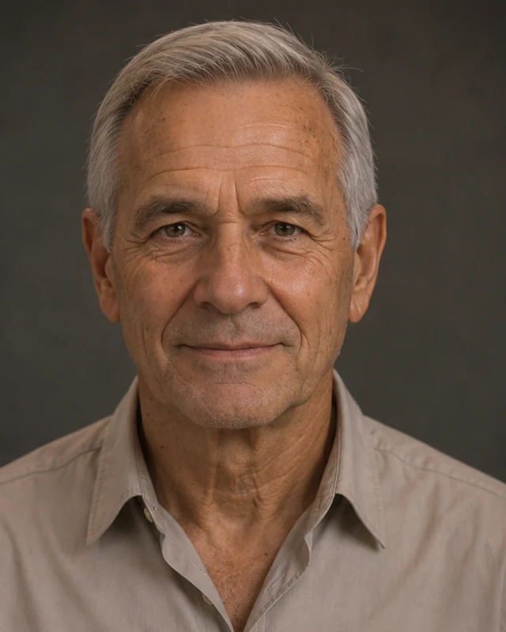
FIRST PLAN · ECONOMY · INFRASTRUCTURE
An entrepreneur and systems organiser helping build scientific, economic and civil infrastructure.
Read more →
ZERO PLAN · INDUSTRY
Coordinates the Zero Plan's industrial capacity, medical capsule production and the transfer of manufacturing cycles to other Plans.
Read more →CHARACTER SELECTION
This page includes characters who recur more than twice in the three supplied current books. Variants of the same name, including Rayen / Raien and Grandpa Mykola / Mykolai, are grouped into one entry. Characters with distinct names or callsigns remain separate where the text treats them as different people.
The list is based on the book text, not incidental references to organisations, units, equipment or unnamed characters.